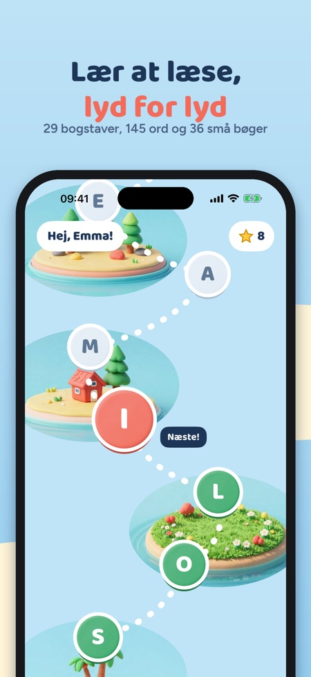
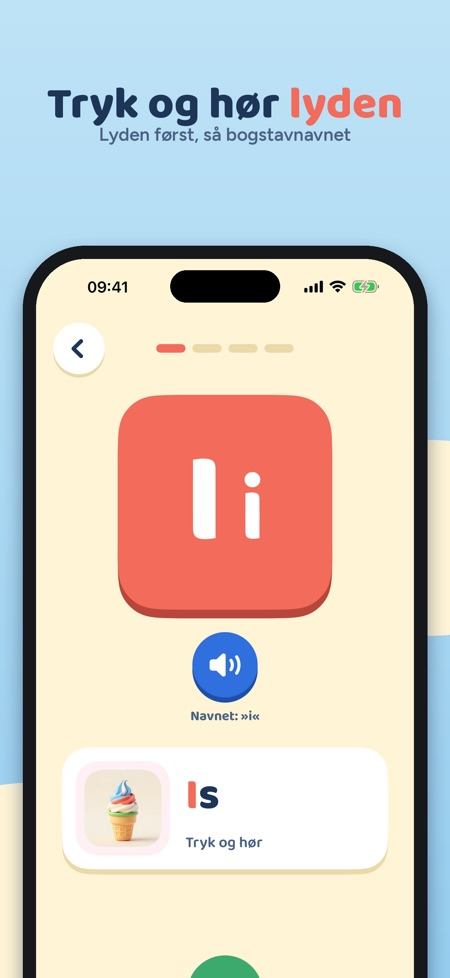
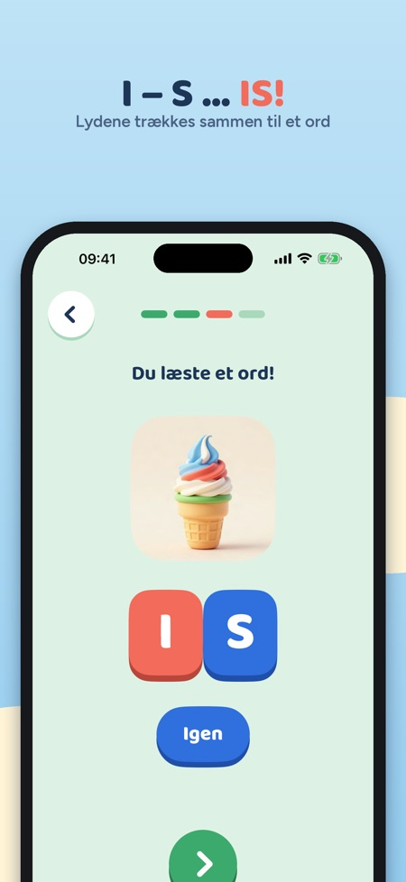

Læsespil: bogstaver og lyde. Lær bogstavernes lyde ét ad gangen, sæt lydene sammen til ord, og læs små bøger med kun de bogstaver, barnet kan. Til børn på 5–8 år, uden reklamer.



Læsestart lærer barnet at læse, som mange lærere gør det: lyd for lyd. Først bogstavets lyd, så lydene sammen til ord og så små bøger.
29 BOGSTAVER PÅ ET EVENTYRKORT
• Alle bogstaverne, også Æ, Ø og Å, i en rækkefølge, hvor ord kommer tidligt: S, O, L, I, M, A …
• Hvert bogstav er en lille lektion i fire trin, og alt bliver læst højt, så barnet behøver ikke at kunne læse
• Stort og lille bogstav sammen, lyden først og bogstavnavnet på et særskilt tryk
FIRE TRIN PER BOGSTAV
• Bogstav og lyd: tryk på bogstavet og hør lyden, med et ord og et billede
• Lydjagt: hør lyden og find det rigtige bogstav
• Lydering: tryk på lydene og træk dem sammen til et ord – sol!
• Ord og billede: læs ordet og vælg det billede, der passer
LÆSEBOG OG ORD
• 36 små læsebøger, der kun bruger bogstaver, barnet allerede kan
• 145 ord med billeder og 100 almindelige ord at genkende
• Tryk på et ord i bogen for at høre det
BELØNNING
• Stjerner og et klistermærke for hvert nyt bogstav
TIL FORÆLDRE
• Se, hvilke bogstaver barnet kan, minutter denne uge og læste ord
• Lyde, der er lidt svære, med tip til, hvad I kan øve sammen
• Daglig tidsgrænse med en venlig »vi fortsætter i morgen«-skærm
• Køb og indstillinger ligger bag en enkel opgave for voksne
DE FØRSTE BOGSTAVER OG KØB
De første fem bogstaver (S, O, L, I og M) kan bruges uden køb. Ét engangskøb åbner hele alfabetet, alle ord og læsebøgerne. Intet abonnement.
TRYGT FOR BØRN
Ingen reklamer, intet login, ingen analyse og ingen data, der deles. Alt gemmes på enheden, og appen virker uden internet.